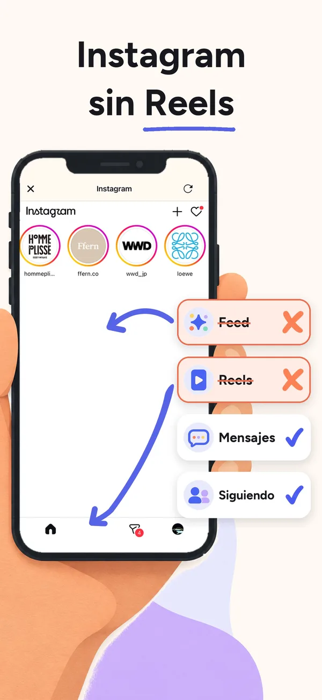
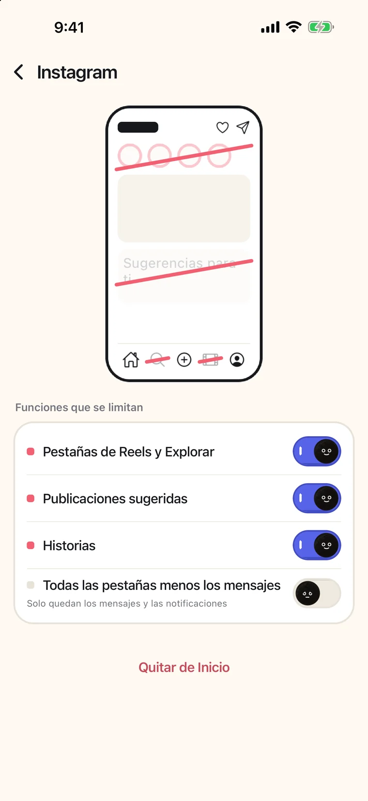

Cómo ver un Reel que te ha mandado un amigo sin quedarte enganchado a los Reels (iPhone, 2026)
Para ver un Reel que un amigo te mandó por DM sin que te arrastre a los Reels, abre Instagram en minulo: el Reel se detiene antes de que empiece el feed de Reels, Abrir 5 min te deja verlo durante cinco minutos, y ocultar los Reels es gratis, sin suscripción, sin periodo de prueba y sin crear una cuenta.
En la app de Instagram, un Reel que abres desde un chat se reproduce en el visor de Reels, y con un solo deslizamiento el feed sigue. Instagram no tiene ningún ajuste que oculte la pestaña de Reels a las cuentas de adultos. En minulo, cuando abres un Reel o un Short que te han mandado por DM, se detiene antes de que empiece el feed de vídeos verticales, y Abrir 5 min te deja verlo durante cinco minutos. Después, el bloqueo vuelve a activarse solo.
- Instala minulo y abre Instagram dentro de la app. Inicia sesión en la propia página de Instagram.
- Toca el engranaje junto a Instagram y activa Pestañas de Reels y Explorar. Ocultar los Reels es gratis.
- Cuando un amigo te mande un Reel, ábrelo desde el chat como siempre. minulo se detiene antes de que empiece el feed de Reels.
- Para verlo, toca Abrir 5 min. Pasados los cinco minutos, el bloqueo vuelve a activarse solo.
Esta página la escribe Ayumu Kitabayashi, el desarrollador de minulo. Lo relativo a minulo procede de sus preguntas frecuentes y su página de soporte, y lo relativo a otras apps, de sus fichas en la App Store de EE. UU., comprobadas en octubre de 2026. Los nombres de los menús pueden cambiar con las actualizaciones de las apps.
| Opción | Un Reel que te manda un amigo | El feed de Reels |
|---|---|---|
| La app de Instagram | Se reproduce, y con un deslizamiento pasas a más Reels | Siempre ahí |
| Límite de Tiempo de uso para Instagram | Bloqueado junto con el resto de Instagram, DMs incluidos | Bloqueado |
| SocialLite | Puedes ver ese vídeo, pero no pasar al siguiente (según su ficha en la App Store) | Oculto |
| minulo | Se detiene antes de que empiece el feed; Abrir 5 min para verlo | Oculto con el interruptor Pestañas de Reels y Explorar |
Por qué todo empieza con un Reel que te mandan
Mucha gente no abre los Reels a propósito. Un amigo te manda uno por el chat, lo abres para contestar y ya se está reproduciendo el siguiente. Bloquear Instagram no sirve aquí, porque el chat es justo lo que quieres conservar. Lo que ayuda es un corte entre el vídeo que te mandaron y el feed que viene después.
Configúralo en minulo
- Instala minulo y abre Instagram dentro de la app. Inicia sesión en la propia página de Instagram; minulo no ve tu contraseña.
- Toca el engranaje junto a Instagram y activa Pestañas de Reels y Explorar. Este interruptor oculta las dos cosas a la vez.
- Cuando un amigo te mande un Reel, ábrelo desde el chat como siempre. minulo se detiene antes del feed infinito. Toca Abrir 5 min si quieres verlo.
- Opcional: bloquea la app oficial de Instagram con Tiempo de uso para que, al tocar su icono, acabes en minulo. El bloqueo es gratis hasta 2 horas cada vez.


Si solo quieres los mensajes, activa Todas las pestañas menos los mensajes, que deja solo los DMs y la pestaña de notificaciones. Ocultar los Reels, Explorar y las publicaciones sugeridas es gratis.
Para que decidas con toda la información, estos son sus límites: minulo no puede cambiar las apps oficiales, así que los Reels y los Shorts solo se ocultan dentro de minulo. Mientras minulo bloquea una app oficial, las notificaciones de esa app no llegan, y minulo no envía notificaciones propias. No se pueden publicar historias, enviar mensajes de voz ni hacer llamadas, porque las versiones web de estas redes no lo permiten. minulo funciona en iPhone y Mac (la app para Mac funciona en Safari y Chrome), no en Android, y es nueva, con pocas valoraciones. Consulta lo que minulo no puede hacer.
Cómo ver un Reel que un amigo te mandó por DM sin que te arrastre a los Reels
Para ver un Reel que un amigo te mandó por DM sin que te arrastre a los Reels, abre Instagram en minulo: el Reel se detiene antes de que empiece el feed de Reels, Abrir 5 min te deja verlo durante cinco minutos, y ocultar los Reels es gratis, sin suscripción, sin periodo de prueba y sin crear una cuenta.
¿Puedo ver los Reels que me mandan mis amigos sin la pestaña de Reels?
Sí, en minulo, gratis. Las pestañas de Reels y Explorar están ocultas, y un Reel abierto desde un DM se detiene antes de que empiece el feed. Toca Abrir 5 min para verlo.
¿Cómo hago que Instagram no reproduzca el siguiente Reel?
La app de Instagram no deja a las cuentas de adultos ocultar la pestaña de Reels, y un Reel abierto desde un chat sigue en el feed. Si abres Instagram en minulo, hay un corte antes de ese feed. SocialLite dice que puedes ver ese vídeo, pero no pasar al siguiente.
¿Qué pasa cuando terminan los 5 minutos?
El bloqueo vuelve a activarse automáticamente, así que el feed de Reels queda otra vez fuera de tu alcance hasta que vuelvas a elegir Abrir 5 min.
¿Funciona también con los Shorts de YouTube que me mandan por DM?
Sí. minulo detiene tanto los Reels como los Shorts que te han mandado por DM antes de que empiece el feed de vídeos verticales.
¿Tengo que renunciar a los chats de grupo?
No. Los DMs y los chats de grupo siguen funcionando en minulo. Si bloqueas la app oficial, sus notificaciones no llegan mientras está bloqueada.
Preguntas relacionadas
Fuentes